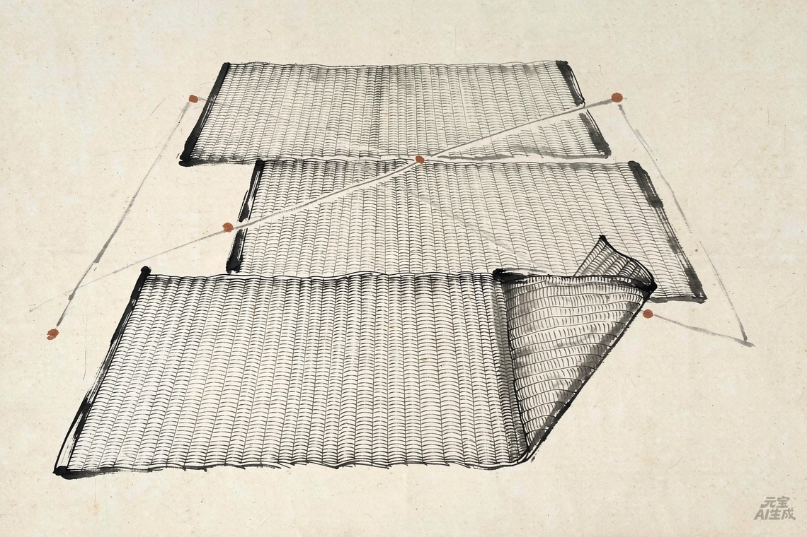
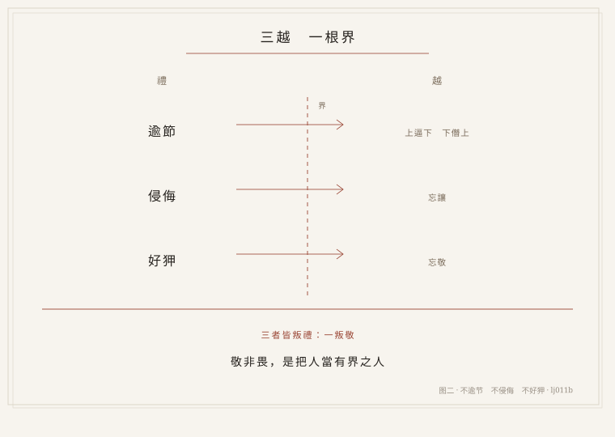

曲礼上 · 一·十二 · 第 11 课
上两课管口，这一课管身：不越分，不欺人，不亵近。
说什么事：三句，一句一种越界——越分、越人、越亲。
落在哪一层：义。三句看似三事，根只一「敬」。
为何编在此位：一·十讲四判，一·十一讲持尺之口，此课讲持尺之身。判得清，身才站得住；身站不住，判也就作废。
【经】禮不踰節，不侵侮，不好狎。
逾节 疏：「礼者，所以辨尊卑，别等级，使上不逼下，下不僭上，故曰礼不逾越节度也。」节是分，不是限。
侵侮 疏：「礼主于敬，自卑而尊人，故戒之不得侵犯侮慢于人也。」
好狎 郑注：「习近为好狎。」疏：「贤者当狎而敬之，若直近而习之，不加于敬，则是好狎。」——「好」读去声，是嗜好之好，不是「友好」。
三者的共同 集说：「逾节则招辱，侵侮则忘让，好狎则忘敬，三者皆叛礼之事。」
礼不越过名分，不侵犯轻慢人，不以亲近相习为乐。
三句管三种越界：越分、越人、越亲。三界只有一条根——敬。
第一层 节是分，不是限 今人说「节」多作限制解；疏解作「辨尊卑，别等级，使上不逼下，下不僭上」。可见逾节有两头：上逼下是逾，下僭上也是逾。此句从来不只是替上者说话。
第二层 一硬一软 侵侮是硬犯，好狎是软犯。硬犯易见，软犯难察：同桌、同饮、同谑，皆可无犯之名而有犯之实。集说以「忘让」「忘敬」对举，正指此处。
第三层 与一·三对读 一·三说「贤者狎而敬之」，此课说「不好狎」。同一「狎」字，一许一禁，界在敬之有无：狎而敬，是近而不失；好狎，是近而忘敬。两课合看，方知「狎」不是罪，「好」才是。
第四层 三叛一根 逾节是忘了人的位，侵侮是忘了人的尊，好狎是忘了人的界。三者所叛，其实只有一「敬」。敬不是畏，是把对方当作一个有界限的人看待——他站在哪里，他到哪里为止，都算数。
与今日何干 今日的越界多在第三句：以「我们熟」为名，翻人手机、问人薪数、拿人痛处当笑料。此句给一个字作界：好。你是在敬他，还是在好他？
| 左 | 右 |
|---|---|
| 不逾节：上不逼下，下不僭上 | 不侵侮：自卑而尊人 |
| 不好狎：近而习之，不加于敬 | 狎而敬之：近而不失（一·三） |
| 硬犯易见 | 软犯难察 |
| 三叛一根：失敬 | 敬非畏，是把人当有界之人 |

